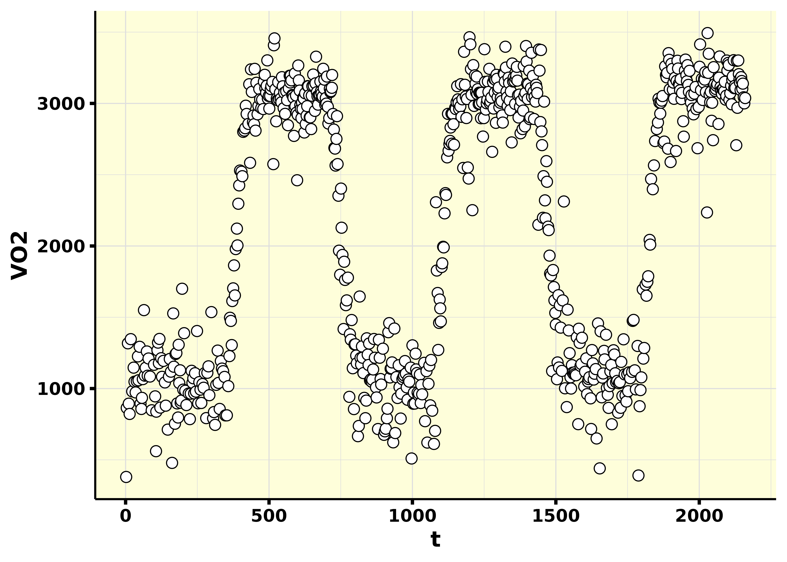
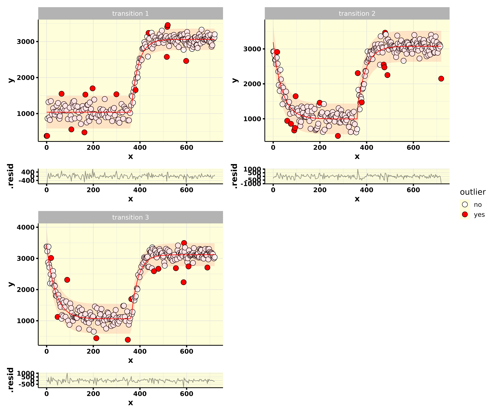

Here you may find a walk-through on how to perform VO2 kinetics analysis in the moderate-intensity domain.
Functions for analysis in the heavy- and severe-intensity domains will be added in the near future.
For making everyone’s life easier, the general function vo2_kinetics() was created. This function calls smaller separate functions that fully automate the VO2 kinetics data analysis. The following interactive tree diagram shows how each function is called:
Read the data
The first step is to read the raw data with the read_data() function. Here we are going to use the example file that comes with {whippr}, which is a file exported from the COSMED metabolic cart.
library(whippr) raw_data <- read_data(path = system.file("example_cosmed.xlsx", package = "whippr"), metabolic_cart = "cosmed", time_column = "t") raw_data
#> # A tibble: 754 x 119
#> t Rf VT VE VO2 VCO2 O2exp CO2exp `VE/VO2` `VE/VCO2` `VO2/Kg`
#> <dbl> <dbl> <dbl> <dbl> <dbl> <dbl> <dbl> <dbl> <dbl> <dbl> <dbl>
#> 1 2 8.08 1.19 9.60 380. 301. 185. 52.9 25.3 31.9 4.58
#> 2 4 23.2 0.915 21.2 864. 665. 141. 40.8 24.5 31.9 10.4
#> 3 8 15.6 2.11 32.9 1317. 1075. 325. 97.2 25.0 30.6 15.9
#> 4 11 20.6 1.18 24.4 894. 714. 188. 49.2 27.3 34.1 10.8
#> 5 14 23.3 0.947 22.1 822. 647. 150. 39.4 26.9 34.1 9.90
#> 6 18 14.7 2.28 33.6 1347. 1126. 351. 108. 24.9 29.8 16.2
#> 7 23 11.2 2.32 26.1 980. 848. 364. 107. 26.6 30.7 11.8
#> 8 28 13.2 2.18 28.8 1147. 981. 336. 105. 25.2 29.4 13.8
#> 9 31 17.7 1.51 26.7 1048. 860. 234. 68.8 25.5 31.0 12.6
#> 10 35 14.2 1.68 23.8 973. 794. 257. 79.3 24.5 30.0 11.7
#> # … with 744 more rows, and 108 more variables: R <dbl>, FeO2 <dbl>,
#> # FeCO2 <dbl>, HR <dbl>, `VO2/HR` <dbl>, Load1 <dbl>, Load2 <dbl>,
#> # Load3 <dbl>, Phase <dbl>, Marker <lgl>, FetO2 <dbl>, FetCO2 <dbl>,
#> # FiO2 <dbl>, FiCO2 <dbl>, Ti <dbl>, Te <dbl>, Ttot <dbl>, `Ti/Ttot` <dbl>,
#> # IV <dbl>, PetO2 <dbl>, PetCO2 <dbl>, `P(a-et)CO2` <dbl>, SpO2 <dbl>,
#> # `VD(phys)` <dbl>, `VD/VT` <dbl>, `Env. Temp.` <dbl>, `Analyz. Temp.` <dbl>,
#> # `Analyz. Press.` <dbl>, `Env. Press.` <dbl>, Batteries <dbl>, PaCO2 <dbl>,
#> # PaO2 <dbl>, PH <dbl>, SaO2 <dbl>, `HCO3-` <dbl>, `Bias Flow` <dbl>,
#> # `La-` <dbl>, Hb <dbl>, `Steady State` <chr>, EEm <dbl>, EEh <dbl>,
#> # EEkc <dbl>, EEbsa <dbl>, EEkg <dbl>, PROg <dbl>, PROkc <dbl>, FATg <dbl>,
#> # FATkc <dbl>, CHOg <dbl>, CHOkc <dbl>, `PRO%` <dbl>, `FAT%` <dbl>,
#> # `CHO%` <dbl>, npRQ <dbl>, `t Rel` <dbl>, `mark Speed` <dbl>, `mark
#> # Dist.` <dbl>, `ST I` <dbl>, `ST II` <dbl>, `ST III` <dbl>, `ST aVR` <dbl>,
#> # `ST aVL` <dbl>, `ST aVF` <dbl>, `ST V1` <dbl>, `ST V2` <dbl>, `ST
#> # V3` <dbl>, `ST V4` <dbl>, `ST V5` <dbl>, `ST V6` <dbl>, `S I` <dbl>, `S
#> # II` <dbl>, `S III` <dbl>, `S aVR` <dbl>, `S aVL` <dbl>, `S aVF` <dbl>, `S
#> # V1` <dbl>, `S V2` <dbl>, `S V3` <dbl>, `S V4` <dbl>, `S V5` <dbl>, `S
#> # V6` <dbl>, `P Syst` <dbl>, `P Diast` <dbl>, Symptom <dbl>, DP <dbl>,
#> # Stage <dbl>, RR <dbl>, METS <dbl>, `Phase time` <chr>, Qt <dbl>, SV <dbl>,
#> # `Vt/FVC` <dbl>, Long <chr>, Lat <chr>, Alt <dbl>, `GPS Speed` <dbl>, `GPS
#> # Dist.` <dbl>, predVO2 <dbl>, BR <dbl>, `O2 Cost` <dbl>, …
As you can see in the following graph, this is a protocol where 3 transitions from a baseline exercise intensity to to an exercise intensity below the gas exchange threshold. Therefore, this is a VO2 kinetics test in the moderate-intensity domain. In this specific case, the following was done:
- 3 x 6-min baseline periods at 20 W.
- 3 x 6-min transition periods at the power output associated with 90% of the gas exchange threshold.
library(ggplot2) raw_data %>% ggplot(aes(t, VO2)) + geom_point(shape = 21, size = 3, fill = "white") + theme_light()

Perform the analysis
After reading the raw data, we can move directly to performing the VO2 kinetics analysis with vo2_kinetics(). This function will:
- Recognize each baseline and transition phase
- Normalize the first breath in each transition in a safe way to prevent time misalignment
- Recognize outliers
- Remove outliers
- Interpolate each transition
- Time-align the data
- Ensemble-average the transitions
- Perform the chosen bin-average
- Fit the final mono-exponential model from VO2 kinetics from the options chosen
- Calculate residuals
For modeling VO2 kinetics analysis in the moderate-intensity domain, a mono-exponential model is used:
\[VO_2\left(t\right)=baseline+amplitude\cdot\left(1-e^{^{-\frac{\left(t-TD\right)}{τ}}}\right)\]
where:
-
VO2(t)= the oxygen uptake at any given time. -
baseline= the oxygen uptake associated with the baseline phase. -
amplitude= the steady-state increase increase in oxygen uptake abovebaseline. -
TD= the time delay. -
τ= the time constant defined as the duration of time for the oxygen uptake to increase to 63% of the steady-state increase.
Important options
In vo2_kinetics() you must set important options before continuing.
Protocol-related options:
-
protocol_n_transitions= Number of transitions performed. -
protocol_baseline_length= The length of the baseline (in seconds). -
protocol_transition_length= The length of the transition (in seconds).
Data cleaning-related options:
-
cleaning_level= A numeric scalar between 0 and 1 giving the confidence level for the intervals to be calculated during the data cleaning process. Breaths lying outside the prediction bands will be excluded. -
cleaning_baseline_fit= A vector of the same length as the number inprotocol_n_transitions, indicating what kind of fit to perform for each baseline. Either linear or exponential.
Fitting-related options:
-
fit_level= A numeric scalar between 0 and 1 giving the confidence level for the parameter estimates in the final VO2 kinetics fit. -
fit_bin_average= The bin average to be performed for the final fit. -
fit_phase_1_length= The length of the phase I that you wish to exclude from the final exponential fit, in seconds. -
fit_baseline_length= The length the baseline to perform the final linear fit, in seconds. -
fit_transition_length= The length of the transition to perform the final exponential fit, in seconds.
The analysis is performed like the following:
results <- vo2_kinetics( .data = raw_data, intensity_domain = "moderate", time_column = "t", vo2_column = "VO2", protocol_n_transitions = 3, protocol_baseline_length = 360, protocol_transition_length = 360, cleaning_level = 0.95, cleaning_baseline_fit = c("linear", "exponential", "exponential"), fit_level = 0.95, fit_bin_average = 5, fit_phase_1_length = 20, fit_baseline_length = 120, fit_transition_length = 240, verbose = TRUE )
results#> # A tibble: 1 x 9
#> data_outliers plot_outliers data_processed data_fitted model model_summary
#> <list> <list> <list> <list> <lis> <list>
#> 1 <tibble [757… <patchwrk> <tibble [145 … <tibble [7… <nls> <tibble [4 ×…
#> # … with 3 more variables: model_residuals <list>, plot_model <list>,
#> # plot_residuals <list>
Fit parameters
Fit parameters and confidence intervals may be accessed through the model_summary column.
results$model_summary[[1]]
#> # A tibble: 4 x 7
#> term estimate std.error statistic p.value conf.low conf.high
#> <chr> <dbl> <dbl> <dbl> <dbl> <dbl> <dbl>
#> 1 baseline 1028. 15.4 66.6 9.49e-29 996. 1060.
#> 2 Amp 2059. 11.0 188. 4.66e-63 2037. 2081.
#> 3 TD 11.0 1.11 9.93 1.39e-12 8.76 13.2
#> 4 tau 22.0 1.29 17.0 2.00e-20 19.3 24.6
Fit plot
The fit plot may be accessed through the plot_model column.
results$plot_model[[1]] #> Warning: Removed 24 row(s) containing missing values (geom_path). #> Warning: Removed 24 row(s) containing missing values (geom_path).

Checking what was done during data cleaning
The data cleaning process may be accessed through the plot_outliers column.
results$plot_outliers[[1]]

Model diagnostics
Model residuals plot may be accessed through the plot_residuals column.
results$plot_residuals[[1]]
Additional columns
Raw data with detected outliers
The raw data with additional columns from the data cleaning process may be accessed through the data_outliers column.
results$data_outliers[[1]]
#> # A tibble: 757 x 131
#> t Rf VT VE VO2 VCO2 O2exp CO2exp `VE/VO2` `VE/VCO2` `VO2/Kg`
#> <dbl> <dbl> <dbl> <dbl> <dbl> <dbl> <dbl> <dbl> <dbl> <dbl> <dbl>
#> 1 0 8.08 1.19 9.60 380. 301. 185. 52.9 25.3 31.9 4.58
#> 2 2 8.08 1.19 9.60 380. 301. 185. 52.9 25.3 31.9 4.58
#> 3 4 23.2 0.915 21.2 864. 665. 141. 40.8 24.5 31.9 10.4
#> 4 8 15.6 2.11 32.9 1317. 1075. 325. 97.2 25.0 30.6 15.9
#> 5 11 20.6 1.18 24.4 894. 714. 188. 49.2 27.3 34.1 10.8
#> 6 14 23.3 0.947 22.1 822. 647. 150. 39.4 26.9 34.1 9.90
#> 7 18 14.7 2.28 33.6 1347. 1126. 351. 108. 24.9 29.8 16.2
#> 8 23 11.2 2.32 26.1 980. 848. 364. 107. 26.6 30.7 11.8
#> 9 28 13.2 2.18 28.8 1147. 981. 336. 105. 25.2 29.4 13.8
#> 10 31 17.7 1.51 26.7 1048. 860. 234. 68.8 25.5 31.0 12.6
#> # … with 747 more rows, and 120 more variables: R <dbl>, FeO2 <dbl>,
#> # FeCO2 <dbl>, HR <dbl>, `VO2/HR` <dbl>, Load1 <dbl>, Load2 <dbl>,
#> # Load3 <dbl>, Phase <dbl>, Marker <lgl>, FetO2 <dbl>, FetCO2 <dbl>,
#> # FiO2 <dbl>, FiCO2 <dbl>, Ti <dbl>, Te <dbl>, Ttot <dbl>, `Ti/Ttot` <dbl>,
#> # IV <dbl>, PetO2 <dbl>, PetCO2 <dbl>, `P(a-et)CO2` <dbl>, SpO2 <dbl>,
#> # `VD(phys)` <dbl>, `VD/VT` <dbl>, `Env. Temp.` <dbl>, `Analyz. Temp.` <dbl>,
#> # `Analyz. Press.` <dbl>, `Env. Press.` <dbl>, Batteries <dbl>, PaCO2 <dbl>,
#> # PaO2 <dbl>, PH <dbl>, SaO2 <dbl>, `HCO3-` <dbl>, `Bias Flow` <dbl>,
#> # `La-` <dbl>, Hb <dbl>, `Steady State` <chr>, EEm <dbl>, EEh <dbl>,
#> # EEkc <dbl>, EEbsa <dbl>, EEkg <dbl>, PROg <dbl>, PROkc <dbl>, FATg <dbl>,
#> # FATkc <dbl>, CHOg <dbl>, CHOkc <dbl>, `PRO%` <dbl>, `FAT%` <dbl>,
#> # `CHO%` <dbl>, npRQ <dbl>, `t Rel` <dbl>, `mark Speed` <dbl>, `mark
#> # Dist.` <dbl>, `ST I` <dbl>, `ST II` <dbl>, `ST III` <dbl>, `ST aVR` <dbl>,
#> # `ST aVL` <dbl>, `ST aVF` <dbl>, `ST V1` <dbl>, `ST V2` <dbl>, `ST
#> # V3` <dbl>, `ST V4` <dbl>, `ST V5` <dbl>, `ST V6` <dbl>, `S I` <dbl>, `S
#> # II` <dbl>, `S III` <dbl>, `S aVR` <dbl>, `S aVL` <dbl>, `S aVF` <dbl>, `S
#> # V1` <dbl>, `S V2` <dbl>, `S V3` <dbl>, `S V4` <dbl>, `S V5` <dbl>, `S
#> # V6` <dbl>, `P Syst` <dbl>, `P Diast` <dbl>, Symptom <dbl>, DP <dbl>,
#> # Stage <dbl>, RR <dbl>, METS <dbl>, `Phase time` <chr>, Qt <dbl>, SV <dbl>,
#> # `Vt/FVC` <dbl>, Long <chr>, Lat <chr>, Alt <dbl>, `GPS Speed` <dbl>, `GPS
#> # Dist.` <dbl>, predVO2 <dbl>, BR <dbl>, `O2 Cost` <dbl>, …
Processed data
The processed data (cleaned, interpolated, time-aligned, ensemble-averaged, and bin-averaged) may be accessed through the data_processed column.
results$data_processed[[1]]
#> # A tibble: 145 x 114
#> t Rf VT VE VO2 VCO2 O2exp CO2exp `VE/VO2` `VE/VCO2` `VO2/Kg`
#> <dbl> <dbl> <dbl> <dbl> <dbl> <dbl> <dbl> <dbl> <dbl> <dbl> <dbl>
#> 1 -360 27.2 2.80 76.1 3140. 2825. 424. 147. 24.4 27.0 37.8
#> 2 -355 24.1 2.51 61.3 2452. 2202. 386. 128. 25.0 28.5 29.5
#> 3 -350 24.9 2.11 53.7 2218. 1922. 323. 107. 24.7 29.0 26.7
#> 4 -345 23.1 2.09 48.3 2020. 1792. 315. 109. 24.4 28.3 24.3
#> 5 -340 21.2 2.33 49.3 2027. 1833. 354. 121. 24.6 27.5 24.4
#> 6 -335 20.2 2.24 44.1 1790. 1624. 342. 116. 24.9 27.7 21.6
#> 7 -330 18.5 2.50 47.1 1863. 1751. 383. 131. 25.2 27.5 22.4
#> 8 -325 19.6 2.23 44.8 1689. 1625. 346. 114. 26.2 28.1 20.3
#> 9 -320 20.0 1.98 40.1 1526. 1457. 306. 102. 25.8 27.7 18.4
#> 10 -315 20.9 2.06 42.4 1567. 1506. 322. 104. 26.7 28.6 18.9
#> # … with 135 more rows, and 103 more variables: R <dbl>, FeO2 <dbl>,
#> # FeCO2 <dbl>, HR <dbl>, `VO2/HR` <dbl>, Load1 <dbl>, Load2 <dbl>,
#> # Load3 <dbl>, Phase <dbl>, FetO2 <dbl>, FetCO2 <dbl>, FiO2 <dbl>,
#> # FiCO2 <dbl>, Ti <dbl>, Te <dbl>, Ttot <dbl>, `Ti/Ttot` <dbl>, IV <dbl>,
#> # PetO2 <dbl>, PetCO2 <dbl>, `P(a-et)CO2` <dbl>, SpO2 <dbl>,
#> # `VD(phys)` <dbl>, `VD/VT` <dbl>, `Env. Temp.` <dbl>, `Analyz. Temp.` <dbl>,
#> # `Analyz. Press.` <dbl>, `Env. Press.` <dbl>, Batteries <dbl>, PaCO2 <dbl>,
#> # PaO2 <dbl>, PH <dbl>, SaO2 <dbl>, `HCO3-` <dbl>, `Bias Flow` <dbl>,
#> # `La-` <dbl>, Hb <dbl>, EEm <dbl>, EEh <dbl>, EEkc <dbl>, EEbsa <dbl>,
#> # EEkg <dbl>, PROg <dbl>, PROkc <dbl>, FATg <dbl>, FATkc <dbl>, CHOg <dbl>,
#> # CHOkc <dbl>, `PRO%` <dbl>, `FAT%` <dbl>, `CHO%` <dbl>, npRQ <dbl>, `t
#> # Rel` <dbl>, `mark Speed` <dbl>, `mark Dist.` <dbl>, `ST I` <dbl>, `ST
#> # II` <dbl>, `ST III` <dbl>, `ST aVR` <dbl>, `ST aVL` <dbl>, `ST aVF` <dbl>,
#> # `ST V1` <dbl>, `ST V2` <dbl>, `ST V3` <dbl>, `ST V4` <dbl>, `ST V5` <dbl>,
#> # `ST V6` <dbl>, `S I` <dbl>, `S II` <dbl>, `S III` <dbl>, `S aVR` <dbl>, `S
#> # aVL` <dbl>, `S aVF` <dbl>, `S V1` <dbl>, `S V2` <dbl>, `S V3` <dbl>, `S
#> # V4` <dbl>, `S V5` <dbl>, `S V6` <dbl>, `P Syst` <dbl>, `P Diast` <dbl>,
#> # Symptom <dbl>, DP <dbl>, Stage <dbl>, RR <dbl>, METS <dbl>, Qt <dbl>,
#> # SV <dbl>, `Vt/FVC` <dbl>, Alt <dbl>, `GPS Speed` <dbl>, `GPS Dist.` <dbl>,
#> # predVO2 <dbl>, BR <dbl>, `O2 Cost` <dbl>, EEtot <dbl>, IC <dbl>,
#> # Step <dbl>, LogVE <dbl>, `P(A-a)O2` <dbl>, …
Fitted data
The data from the baseline and transition fits may be accessed through the data_fitted column.
results$data_fitted[[1]]
#> # A tibble: 70 x 9
#> t VO2 .fitted .se.fit .resid .hat .sigma .cooksd .std.resid
#> <dbl> <dbl> <dbl> <dbl> <dbl> <dbl> <dbl> <dbl> <dbl>
#> 1 -120 964. 1028. 15.4 -64.0 0.0400 77.6 0.0298 -0.846
#> 2 -115 1018. 1028. 15.4 -10.4 0.04 78.8 0.000791 -0.138
#> 3 -110 1145. 1028. 15.4 116. 0.04 74.8 0.0989 1.54
#> 4 -105 1018. 1028. 15.4 -10.1 0.04 78.8 0.000743 -0.134
#> 5 -100 1062. 1028. 15.4 34.2 0.04 78.5 0.00852 0.452
#> 6 -95 1046. 1028. 15.4 18.3 0.04 78.7 0.00244 0.242
#> 7 -90 1050. 1028. 15.4 22.1 0.04 78.7 0.00354 0.292
#> 8 -85 1068. 1028. 15.4 39.8 0.04 78.4 0.0115 0.526
#> 9 -80 1029. 1028. 15.4 1.16 0.04 78.8 0.00000978 0.0153
#> 10 -75 991. 1028. 15.4 -37.4 0.04 78.4 0.0102 -0.495
#> # … with 60 more rows
Model
The model used for fitting the mono-exponential model may be accessed through the model column.
results$model[[1]] #> Nonlinear regression model #> model: VO2 ~ 1028.0768176047 + Amp * (1 - exp(-(t - TD)/tau)) #> data: data_transition #> Amp TD tau #> 2058.89 11.00 21.96 #> residual sum-of-squares: 138148 #> #> Number of iterations to convergence: 6 #> Achieved convergence tolerance: 1.49e-08 summary(results$model[[1]]) #> #> Formula: VO2 ~ 1028.0768176047 + Amp * (1 - exp(-(t - TD)/tau)) #> #> Parameters: #> Estimate Std. Error t value Pr(>|t|) #> Amp 2058.894 10.962 187.818 < 2e-16 *** #> TD 11.001 1.108 9.929 1.39e-12 *** #> tau 21.958 1.293 16.987 < 2e-16 *** #> --- #> Signif. codes: 0 '***' 0.001 '**' 0.01 '*' 0.05 '.' 0.1 ' ' 1 #> #> Residual standard error: 57.35 on 42 degrees of freedom #> #> Number of iterations to convergence: 6 #> Achieved convergence tolerance: 1.49e-08
Residuals data
The model residuals data may be accessed through the model_residuals column.
results$model_residuals[[1]]
#> # A tibble: 45 x 7
#> t VO2 .fitted .resid standardized_res… sqrt_abs_standard… lag_residuals
#> <dbl> <dbl> <dbl> <dbl> <dbl> <dbl> <dbl>
#> 1 20 1799. 1720. 78.5 1.37 1.17 NA
#> 2 25 1960. 1999. -38.5 -0.672 0.820 78.5
#> 3 30 2127. 2220. -93.3 -1.63 1.28 -38.5
#> 4 35 2384. 2397. -12.5 -0.218 0.467 -93.3
#> 5 40 2522. 2537. -15.7 -0.274 0.523 -12.5
#> 6 45 2659. 2649. 9.61 0.167 0.409 -15.7
#> 7 50 2755. 2738. 16.3 0.285 0.534 9.61
#> 8 55 2851. 2809. 41.6 0.726 0.852 16.3
#> 9 60 2936. 2866. 69.7 1.22 1.10 41.6
#> 10 65 2885. 2911. -25.5 -0.444 0.667 69.7
#> # … with 35 more rows